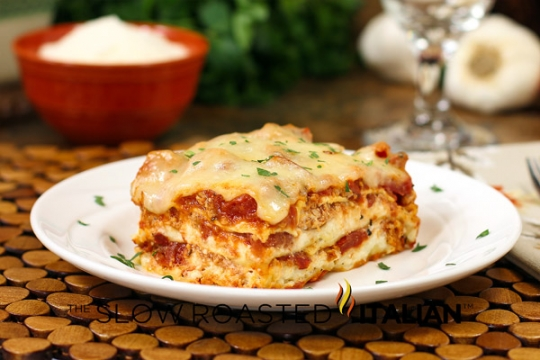
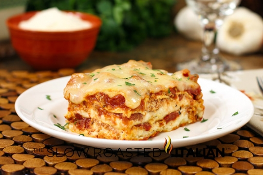
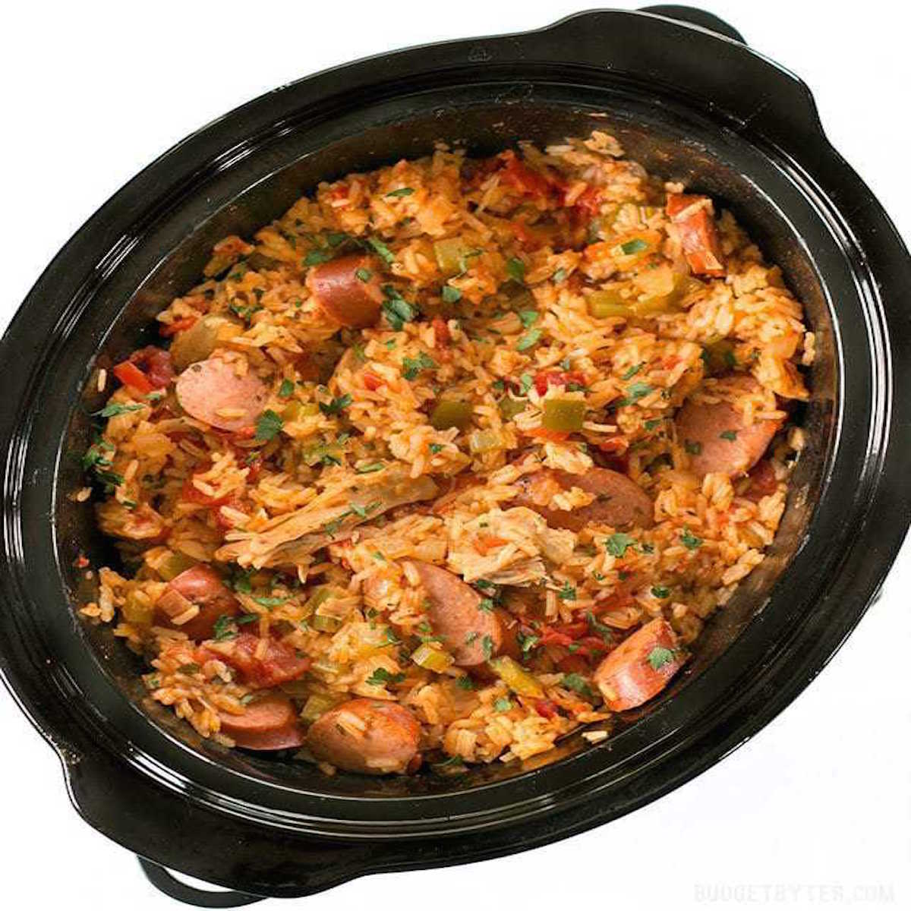
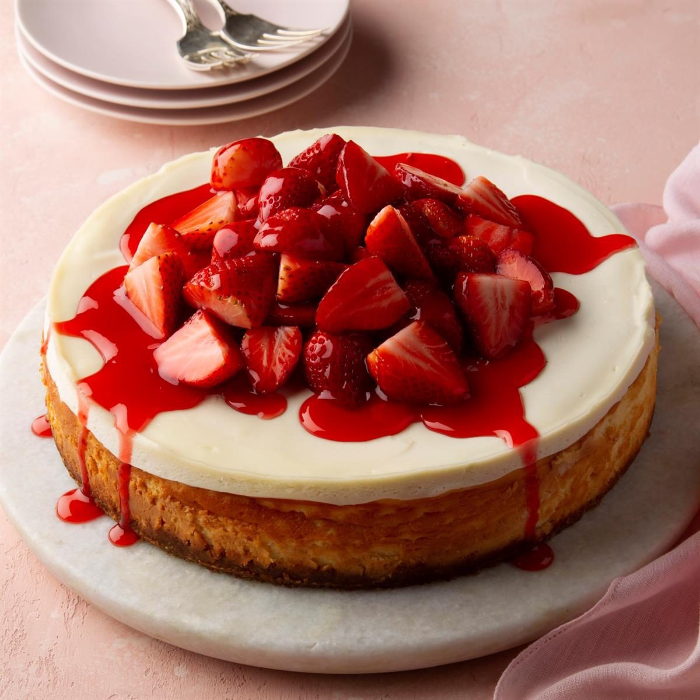
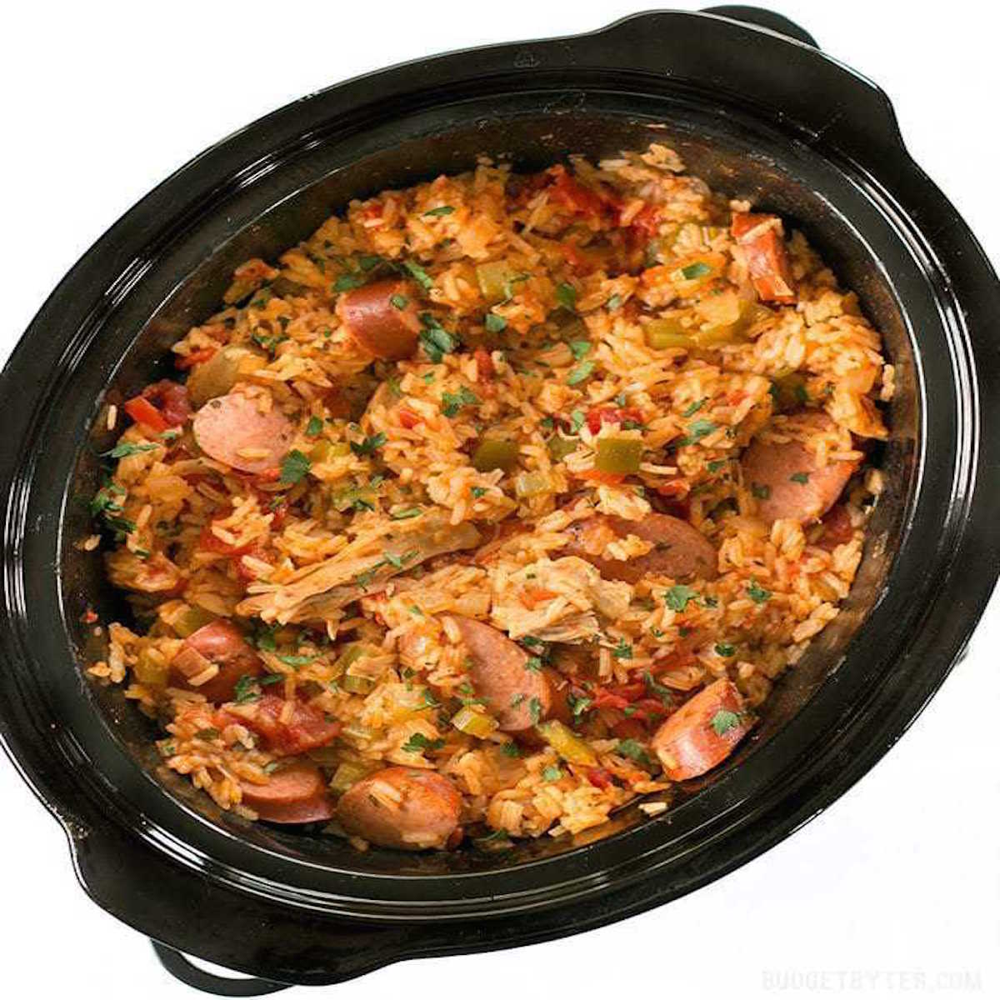
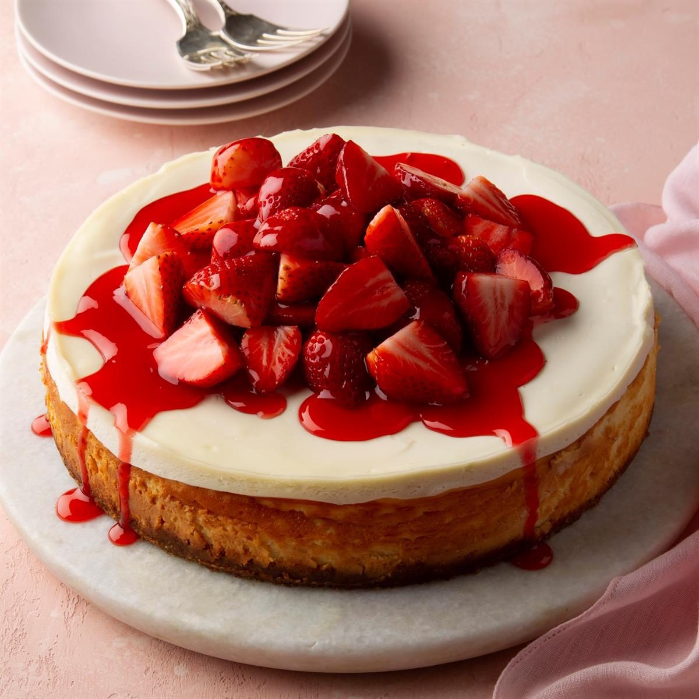

Notes
This website contains our favorite recipes that we have made over the past few years of learning to cook.

 


 



This website contains our favorite recipes that we have made over the past few years of learning to cook.